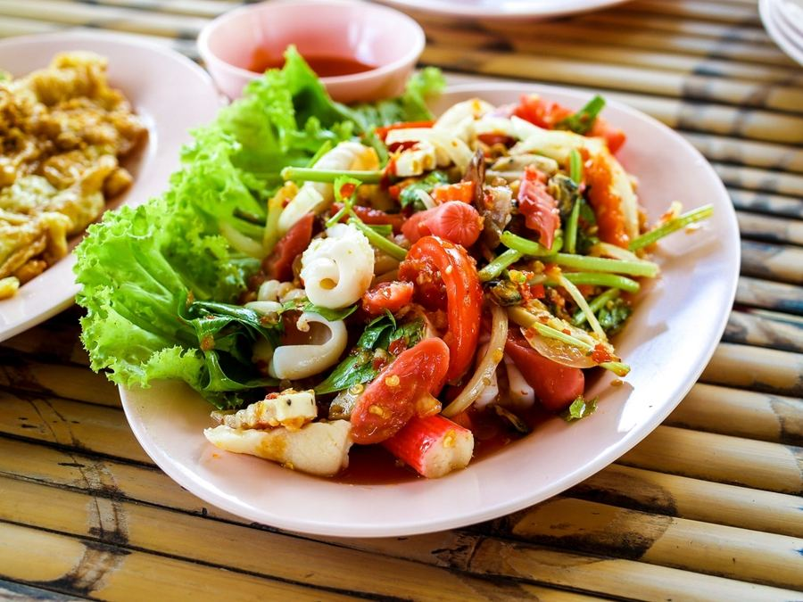
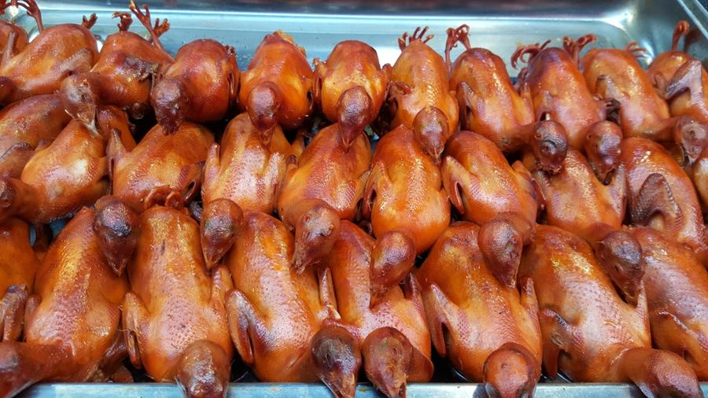
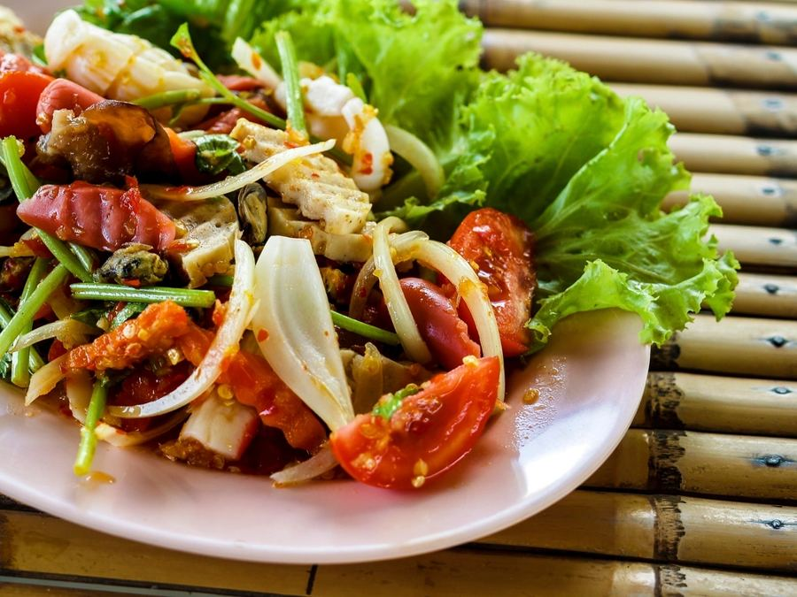
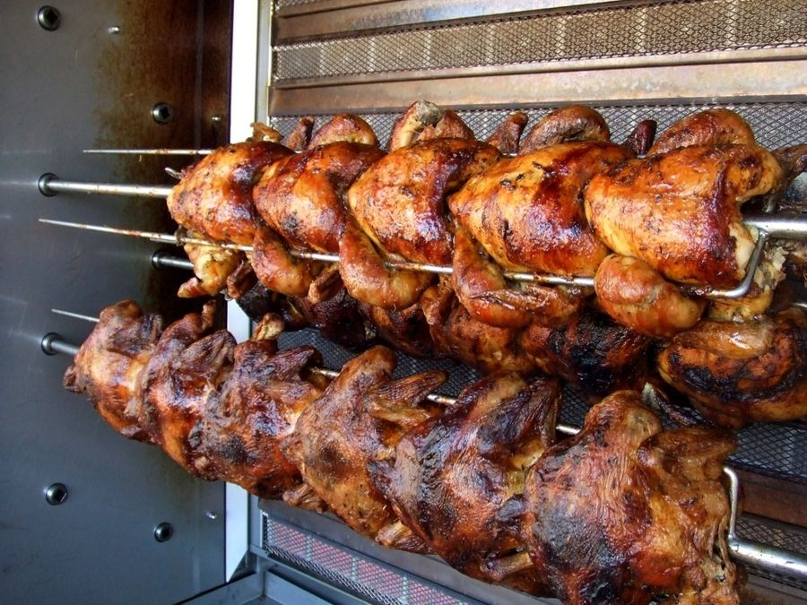
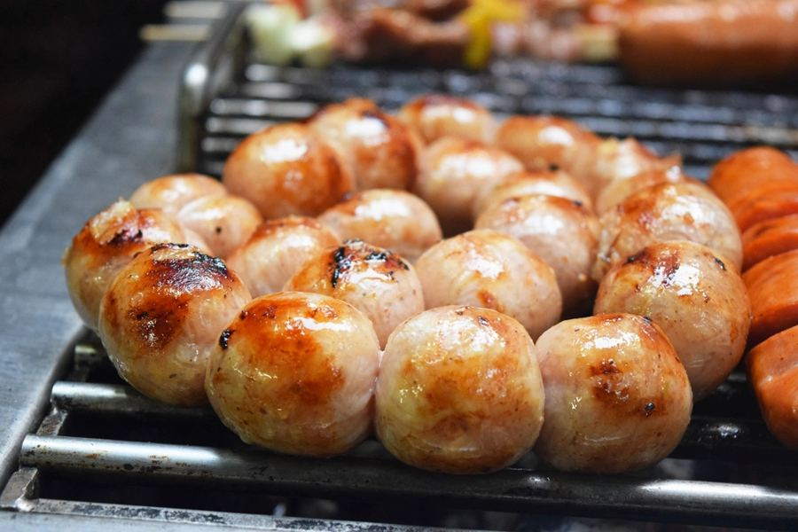
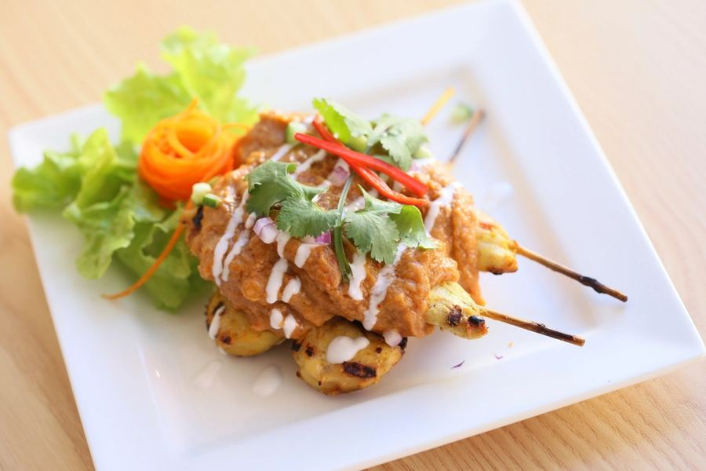
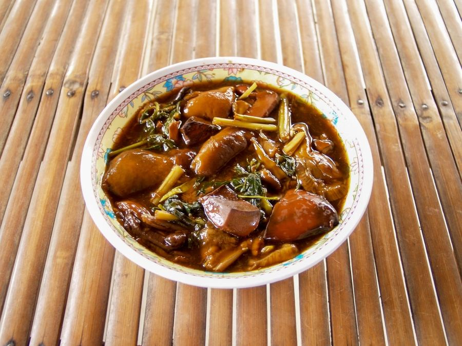

ส้มตำไทยSom tam Thai
มะละกอสับ ถั่วลิสง มะเขือเทศGreen papaya salad with peanuts
50.-
อาหารอีสาน · อุดรธานี · Isan food · Udon Thani
Real Isan flavours, made fresh every day
ส้มตำ ไก่ย่าง ไส้กรอกอีสาน และข้าวเหนียวร้อนๆ ทำสดทุกจาน นั่งทานในร้านหรือสั่งกลับบ้านก็ได้
Som tam, grilled chicken, Isan sausage and hot sticky rice, every dish made to order. Eat in or take away.

เกี่ยวกับเรา · About us
เราเป็นร้านอาหารอีสานแบบบ้านๆ ใช้น้ำปลาร้าสูตรของร้าน ผักสดจากตลาดเช้า และย่างไก่บนเตาถ่านทุกวัน
A homely Isan restaurant: our own pla ra recipe, fresh vegetables from the morning market, and chicken grilled over charcoal every day.
เมนูแนะนำ · Recommended

มะละกอสับ ถั่วลิสง มะเขือเทศGreen papaya salad with peanuts
50.-

รสจัดจ้าน สไตล์อีสานBold, salty, Isan-style
60.-

ครึ่งตัว เสิร์ฟพร้อมแจ่วHalf chicken with jaew dip
120.-

ทำเองที่ร้าน ย่างร้อนๆHouse-made, grilled to order
60.-

3 ไม้ หมักสูตรร้าน3 skewers, house marinade
40.-

สมุนไพรเต็มถ้วยFull of fresh herbs
80.-
ข้าวเหนียว 10.- ต่อกระติบ · ราคาเป็นตัวอย่างSticky rice 10 baht per basket · Example prices
เวลาเปิด · Opening hours
| จันทร์–อังคารMon–Tue | 10:00–21:00 |
|---|---|
| พุธWed | ปิด · Closed |
| พฤหัสบดี–อาทิตย์Thu–Sun | 10:00–21:00 |
ใจกลางเมืองอุดรธานี (ที่อยู่ตัวอย่าง)Central Udon Thani (example address)